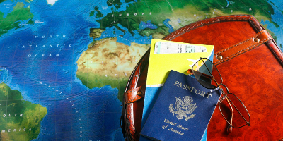
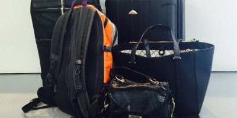
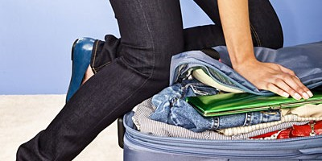

Image credit: David Lowry
Why It's Important To Pack Smart.
Packing smart ensures alot of time that could be spent vacationing, and for maximizing your travel experience, worry-free. Travel Smart.
Travel Documents

- Passport- for international travel (make sure it is up-to-date).
- Current Driver's License- please note that some states require an enhanced license.
- Day pack- bring a light bag for everyday carriage
- Backpack- bring a backpack for hiking and 1-3 day trips
- Rolling luggage bag- It's a good idea to have a rolling luggage bag for easy carriage of electronics and everything else Tip: You can also stack your other bags on top of the rolling luggage bag the airport
- Layers- check the local weather reports, but also take into account changes in weather.
- Shoes: flip flops and sneakers are recommended staples for travel.
- Rolling Clothes- rolling your clothes saves more space than folding, that way, you can put clothes into the sides of the luggage case, and roll socks inside of shoes.
Type of Luggage to Use

Clothing To Bring

How To Pack